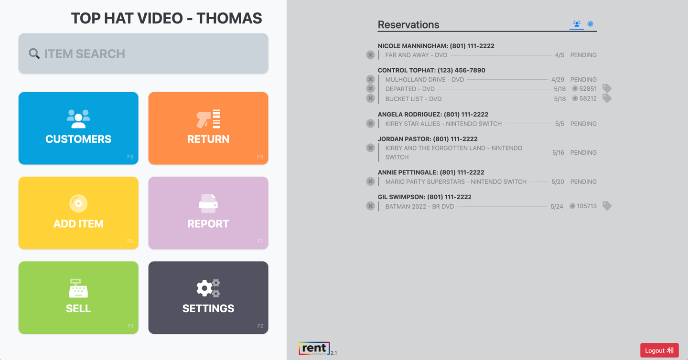

RentSoft
May 15th, 2022

What was it?
RentSoft is a custom cloud application that runs the day-to-day business at Top Hat Video, one of the few remaining brick and mortar video rental stores. RentSoft includes a point of sale terminal with Stripe integration, a rentals and returns manager, a suite of business report dashboards, and reservations system. I built it along with two friends that I'd known since elementary school, Joe Wesemann and Spencer Dixon, who also worked with me to build The Campus Market.
Why did we build it?
Top Hat Video has become a local institution in our community, and they've managed to stay in business over the years due in large part to their cult following. Spencer is a proud member of that cult and has worked at Top Hat since high school. These days he's only able to go into the store on the weekends, but he'll never miss the opporutnity to assist customers and offer movie recommendations. Since he had worked in the store for 10+ years he was intimately familiar with the software the business was running on; an ancient Windows application that only worked on a few computers in the store connected to an Access database running on a machine in the back room. The developers who had created the software hadn't actively worked on it in years, so the issues Top Hat dealt with on a daily basis weren't going to be fixed anytime soon.
This is a screenshot of the old software Top Hat was using, pretty isn't it?
I was looking for another project to work on after we shut down The Campus Market, and there was clearly room to improve the current software Top Hat used. However, after seriously looking at their old software we quickly realized building something from scratch would be the better option. Spencer easily convinced the owners that a new system would benefit the business and below are the core MVP features we agreed to build. But by the time we launched the list of features and scope of RentSoft had grown dramatically.
- Rent, return, reserve, and sell
- Modifying Inventory (add/delete)
- Late fee accounting
- Pre-paid rental program (punch pass)
- Credit card processing (integration)
- End of day cash drawer session reporting
- Multi-rent discounts
- Customer facing website to view inventory
What did it do?
Data Migration
Before we could start building anything we had to understand how the old software structured the data since we'd have to migrate customer, item, and rental data into our new application. Long story short, it was a mess. The old software seemed as if it had been built for a completely different use case and then adapted to rentals. I spent days working on Python ETL scripts to manipulate the data into a structure that would allow us to build the new application with modern features. But the worst part of the data migration was launch night. When we moved Top Hat onto RentSoft, we had to use the most up-to-date data to ensure that all of the rentals and returns were imported correctly. To do that we had to wait until the store closed, export all of the data, run the ETL sripts, import the newly cleaned data into our database, and launch RentSoft before the store opened in the morning. Of course that night didn't go smoothly, and we were at Top Hat until 4:30am. But we got it done.
3:28am on launch day attempting to migrate Top Hat data into RentSoft.
Customers
At Top Hat there are customers and each customer is tied to an account. Typically an account represents a family but the old software was setup in a way that only allowed 3 customers to be tied to an account. That resulted in families sharing accounts and the data couldn't show exactly who was renting what. We fixed all of that and added a bunch of improvments. On the account details page you can view all of the customers tied to an account along with their pictures (used to verify identity when renting). Additionally you can view all of the account information and history in one place. This includes rentals, fees, credits, transactions, reservations, and more.
You can also edit and make changes to an account such as updating an address or phone number, gifting a free rental for a loyal customer, modifying a reservation, or adding a note to the account for other employees to see.
The account details page, all account information in one place.
Item Details
Top Hat rents a massive library of movies and video games that are in a wide variety of formats (DVD, VHS, Bluray, Xbox, Playstation, etc.) Representing the relationship between a Title/Disc/Format/Rating properly within our software was critical and the foundation of RentSoft.
On the item details page you can view all of the discs associated with a title, including their rental status and location within the store. You can manage those items and the title on this page, and we've integrated with various external APIs to pull in additional information about the title in case a customer wants to know more before renting.
The item details page, all item and title information in one place.
Point Of Sale
The Point of Sale (POS) component was the most complicated aspect of RentSoft. Not only did we have to calculate totals using various tax rates, but we had to tailor the checkout process to their existing processes. Examples include:
- Punch passes that give customers free rentals
- Manually modifed prices to give ad-hoc discounts
- Discounts when multiple items are rented
- Accounts with dollar amount credits to be applied towards only certain items
- Rental limits preventing an account from having too many items at one time
- Manually modified rental durations to give ad-hoc extended rentals
Integrating with Stripe for credit card payments was the easiest part of the POS, though we also had to upport payments in cash and by check.
The Point of Sale page where the money is made.
Reservations and Reports
I can still remember laughing when Spencer explained to me how the old software handled reservations. You could only make a reservation for a specific disc rather than any disc that matched the title and format criteria. So if you made a reservation for the newest Marvel movie disc number 12345 and it was returned late, the customer would wait weeks for disc number 12345 while other discs of the same movie are sitting on shelves in the store. And to match an item to a reservation, the employees had to manually consult the reservation list while checking in items so that if they saw one that was reserved they set it aside.
We made sure to structure our database in a way that you could make a reservation for a title (i.e. Iron Man 2) and that reservation could be fulfilled by any Iron Man 2 disc. And today when a matching item is returned, it's automatically assigned to a pending reservation and if you try to rent it to anyone other than the account with the reservation you are denied.
In addition to showing reservations, the reports component displays a list of various custom reports used by the business. Some of them are financial reports for end of month sales tracking, and others are used day-to-day in various processes.
The reservations report that shows all future reservations.
Customer Facing Website
We were also asked to create a new customer facing website that could tie into RentSoft and allow future improvements to give customers control over their account online. The two features they wanted initially was the ability for customers to search for an item and the ability to display recently added items.
Customers can go to the Top Hat website and search for items before coming into the store.

Customers can view items that have been recently added to the Top Hat library.
How did it go?
Top Hat is still in business and is still using our software to this day.
Did we become millionaires? No.
Do we get unlimited free rentals? Yes.
Would I do it all over again? It depends.
Building software from scratch that a business and its employees depend on was (and still is) a daunting task. The stakes for this were much higher than The Campus Market. It was a different experience building something that had historical data we needed to preserve, and that needed to accomdate existing business processes. Unlike The Campus Market we couldn't make decisions on the fly and had to work with Top Hat to understand why they did things the way they did and try to make improvements where we could.
We get a check every month from Top Hat, but the amount of money we've made pales in comparison to the hours we put into building RentSoft. We understood that the agreement we made with the owners was more beneficial to Top Hat than it was to Joe, Spencer, and I. We were ok with that in the beginning, but as the scope began to increase so did our frustrations. So would I do it again? Sure, I'd build software for another local business but there are a couple of things I learned from this experience I'd keep in mind.
- I'm no longer a college student working on side projects for the sake of getting experience.
- Take the time to clearly define requirements and make sure everyone agrees on scope before you write the first line of code.
- Setup a clear communication strategy with stakeholders.
- Data migration might be the biggest feature you develop, don't forget about it when defining scope.
- Push back on stakeholders when they tell you "it's been done like that for years" - that's not a good enough reason to continue dumb processes.
Let's Get In Touch!
Send me an email or reach out on LinkedIn and I will get back to you as soon as possible!